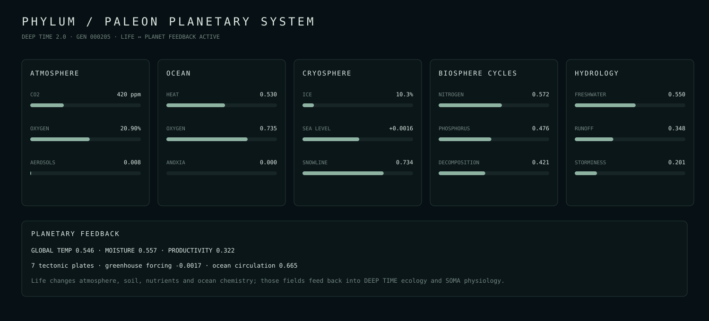

PHYLUM / PALEON
DEEP TIME 2.0 planetary systems dossier · generation 000224

Current planetary state
{
"generation": 224,
"temperature": 0.54594,
"moisture": 0.55745,
"productivity": 0.32175,
"atmosphere": {
"aerosols": 0.00818,
"co2": 0.000419965,
"greenhouse_index": -0.001706,
"methane": 1.879e-06,
"oxygen": 0.209003,
"pressure": 1.0
},
"ocean": {
"acidity": 0.3,
"anoxia": 0,
"circulation": 0.66457,
"current_phase": 0.645902,
"heat": 0.53029,
"nutrients": 0.58867,
"oxygen": 0.73461
},
"cryosphere": {
"ice_fraction": 0.10346,
"sea_level_anomaly": 0.001587,
"snowline": 0.73378
},
"cycles": {
"available_nitrogen": 0.57173,
"available_phosphorus": 0.47646,
"decomposition": 0.42118,
"living_carbon": 0.41862,
"ocean_carbon": 0.64,
"soil_carbon": 0.52
},
"hydrology": {
"drought_index": 0,
"evaporation": 0.50308,
"flood_index": 0,
"global_freshwater": 0.55024,
"runoff": 0.34812,
"storminess": 0.20088
},
"plates": 7
}